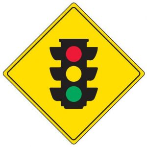

Traffic awareness refers to being aware of your surroundings while driving or walking on the road. It involves paying attention to road signs, traffic signals, and the movements of other vehicles and pedestrians. It helps drivers anticipate potential hazards and react accordingly, reducing the risk of accidents. It means understanding the rules of the road, such as speed limits, lane discipline, etc. The Drivers must also be aware of the condition of the road and adjust their driving accordingly, especially in extreme weather conditions or construction zones. Developing traffic awareness requires constant focus and practice. By staying alert and observant while on the road, drivers can contribute to safer driving experiences for everyone.
|  | |
| Click to view info on Road Safety | Click to view info on Traffic Signs |